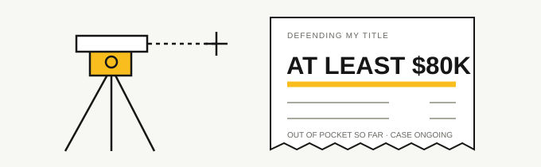
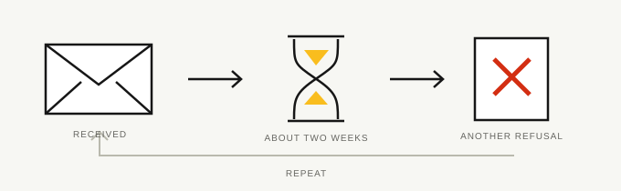
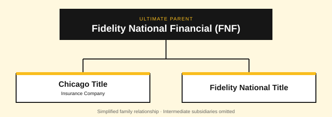

A first-person claim account by the policyholder and site owner
I will not use Chicago Title again.
A neighbor claimed land in my title description. I had nearly $2 million in title insurance with Chicago Title. I’ve already spent at least $80,000 out of pocket defending my title—and the boundary case still isn’t over.
Chicago Title is owned by Fidelity National Financial (FNF). Based on my experience, I recommend avoiding Chicago Title and the Fidelity National Financial title-insurance family. The ownership connection ↓
“Completely screwed” expresses my opinion of my claims experience.
My Chicago Title boundary-dispute claim started with three wooden boards.
I bought a property, moved in, and removed three wooden boards on my own land. After that, I learned that my neighbor disagreed with the boundary line.
Illustration only; not a survey of my property.
I had insured the property with Chicago Title for nearly $2 million. I asked them to defend me.
They refused. Their position was that I had started the dispute by removing those three boards.
I spent at least $80,000 so far defending my title. Chicago Title eventually acknowledged that the boundary was in dispute. But they refused to address the other claims, including trespass and damages, even though those claims were directly tied to the disputed boundary line.
But they still refused to cover the costs I had already incurred. The reason they gave was that I hadn’t obtained their approval in advance for those court costs.
The surveyor they wanted to use—and wouldn’t pay for
I also had to hire an expert surveyor. Chicago Title themselves wanted to use that surveyor for summary judgment, but they refused to cover the expense.

Illustration of the expenses described in my account; not an invoice.
They wouldn’t cover court-ordered mediation either
They also refused to cover court-ordered mediation, saying they hadn’t been informed. I dispute that explanation, given their own lawyer’s involvement in the case.
“Received—I’ll review and will be in touch.”
That’s the acknowledgment I remember getting. Then I’d wait about two weeks, only to be told again why they wouldn’t pay.

The cycle as I experienced it.
From my end, it felt like they spent those two weeks figuring out the best way to tell me I was screwed. That’s how frustrating it was. An acknowledgment, another wait, another refusal. Rinse and repeat.
I was asking for help defending my title. A reply saying someone would review it didn’t pay the costs or give me the defense I had asked for.
They had refused to defend me in the first place.
At every single step, I felt their only priority was getting out of responsibility. They initially refused to defend me. When I sought reimbursement for the costs I had incurred defending my title, they refused those too.
That is the part I want anyone considering Chicago Title to understand. I asked for a defense. They refused, saying I had caused the dispute by removing the boards. They later acknowledged that the boundary was in dispute. They refused to address the related trespass and damages claims, and said I hadn’t obtained advance approval for my costs.
I asked them to defend me. They refused. Then they refused to cover the costs because I hadn’t gotten approval first.
I don’t consider that an acceptable experience with a title insurer. I had nearly $2 million in title insurance with this company, and I was left paying those costs myself.
I will not use Chicago Title again. If you’re deciding whether to use them, this is the experience I want you to know about.
What was my title insurance for?
Have a neighbor claim land that’s in your title description—the land you insured with Chicago Title? In my case, I got to pay at least $80,000 so far out of pocket to defend it.
I bought title insurance because I wanted protection if someone challenged my title. When that happened, I asked Chicago Title to defend me. The costs I’ve described here were still left with me.
At this point, the protection I thought I was buying is not what I believe Chicago Title actually delivered. That’s why I won’t use them again.
Chicago Title bad-faith court cases: other insureds have fought back, too.
There is a court record beyond my own experience. In separate decisions in 2012 and 2025, appellate courts upheld or directed bad-faith liability against Chicago Title. Here are the decisions so you can read what the courts actually said.
CALIFORNIA COURT OF APPEAL · MAY 12, 2025
Bartel v. Chicago Title Insurance Co.
A homeowner largely funded litigation with a neighbor from his retirement account. Chicago Title accepted a duty to defend only after five years of litigation. The appellate court held that Chicago Title breached its duty to defend and acted in bad faith, directing a new judgment on bad-faith liability and a determination of resulting damages.
The court said Chicago Title repeatedly disregarded the California standard applicable to the duty to defend.
The court upheld the denial of punitive damages. This was an easement dispute under a different policy and state’s law.
U.S. COURT OF APPEALS, SIXTH CIRCUIT · AUGUST 30, 2012
Fifth Third Mortgage Co. v. Chicago Title Insurance Co.
Chicago Title refused to defend or compensate a mortgage lender for a title loss. The appeals court affirmed the judgment against Chicago Title, including the bad-faith ruling. It found that the insurer had relied on an underwriting condition absent from the policy, calling the refusal on that ground plainly unreasonable.
This involved a lender’s policy and a fraudulent issuing agent, rather than a homeowner’s boundary claim.
U.S. DISTRICT COURT, SOUTH DAKOTA · FEBRUARY 9, 2026
Lindeman v. Chicago Title Insurance Company
This case also involved a fence, a property-line dispute, and a refusal to defend. The judge denied Chicago Title’s request for summary judgment on the insured’s contract and bad-faith claims, finding factual disputes requiring further proceedings.
This ruling did not establish bad-faith liability. It allowed the claims to proceed. No later outcome has been verified here.
These summaries describe the linked decisions. They do not establish what a court would decide about my claim, or how often Chicago Title handles claims this way. Later proceedings have not been comprehensively checked. Research checked October 29, 2026.
Chicago Title belongs to Fidelity. I’m avoiding their title-insurance family, too.
Chicago Title Insurance Company is ultimately owned by Fidelity National Financial, Inc. (FNF). Chicago Title’s corporate disclosure identifies FNF as its ultimate parent through wholly owned subsidiaries. Read the corporate disclosure, page i (PDF).

FNF also lists Fidelity National Title among its title-insurance brands. Choosing that name would still mean buying within the same corporate family. See FNF’s own title-insurance page.
My recommendation: avoid Chicago Title and the Fidelity National Financial title-insurance family. After my Chicago Title experience, I would take my business outside that group.
The ownership relationship is documented above. The recommendation is my opinion based on my Chicago Title claim; I am not describing a separate claim with each affiliated insurer.
What am I doing about it?
I’m warning the public, and I intend to sue Chicago Title.
I believe I have a duty to warn other buyers about what happened to me. That’s why I built this site and why I’m putting my experience out in public.
As that case begins, develops, and ends, I plan to publish public filings and correspondence that I can lawfully share, after reviewing them for confidentiality and personal information.
Stay tuned. I’ll post the documents here as they become available, so you can follow the case for yourself.
No court documents from my case are posted here yet. Future uploads will exclude sealed or restricted material, private attorney advice, and confidential mediation communications, with personal information redacted.
Were you also screwed by Chicago Title?
Maybe we should explore a class action instead. If you’ve had a similar experience with Chicago Title, I want to hear from you.
I’m another policyholder dealing with this. Let’s compare experiences and see whether there’s something worth taking to an attorney together.
I’m a fellow policyholder, not your lawyer. Contacting me does not create an attorney-client relationship. I have not filed a class action.
Please start with a brief summary. Don’t send private attorney advice or confidential case files.
There won’t be a next time with Chicago Title—or the Fidelity title-insurance family.
I asked Chicago Title to defend my title. They had the opportunity to help me when I needed it. Based on what happened, I will never buy title insurance from them again.
I shouldn’t have had to spend at least $80,000 so far defending my title, then hear that they wouldn’t cover those costs because I hadn’t obtained advance approval—after they had refused to defend me in the first place.
I paid for an expert surveyor they wanted to use for summary judgment. They wouldn’t cover that either. Court-ordered mediation was another expense they refused to cover. That is the experience I’m taking into my next decision.
Would I use Chicago Title or buy title insurance from the Fidelity National Financial family again? Absolutely not. I would choose an insurer outside that group.
Questions about this Chicago Title insurance review
Why won’t I use Chicago Title Insurance Company again?
I asked Chicago Title to defend me in a boundary dispute. They initially refused, later acknowledged that the boundary was in dispute, but refused to address the related trespass and damages claims. They also declined to cover my incurred costs because I had not obtained advance approval. I spent at least $80,000 so far defending my title. That experience is why I will not use them again. Read my claim account.
Is Chicago Title owned by Fidelity?
Yes. Chicago Title Insurance Company’s ultimate parent is Fidelity National Financial, Inc. (FNF), through wholly owned subsidiaries. Fidelity National Title is part of the same title-insurance family. See the ownership sources and diagram.
Have courts found bad faith by Chicago Title?
Yes. The 2012 Fifth Third appellate decision affirmed a bad-faith ruling; the 2025 Bartel appellate decision directed entry of bad-faith liability and a determination of resulting damages. The 2026 Lindeman order allowed claims to proceed without deciding liability. These are different cases with different facts and policies. Read the linked court decisions and limits.
Is this Chicago Title’s website or an independent review?
This is an independent website written from one policyholder’s perspective. Chicago Title and Fidelity National Financial do not publish or endorse it. My claim account and recommendations are identified separately from the ownership sources and published court decisions.
A note about this account
I am the policyholder and owner of this independent website. The events above are my account of my own claim. The amounts and waiting periods are approximate. My decision not to use Chicago Title again is my personal opinion.
I haven’t published my policy or coverage letter here. The descriptions of Chicago Title’s positions are my summaries. The acknowledgment quoted above is my recollection of the wording; the original message is not reproduced here. This page doesn’t include the company’s complete explanation or an independent finding about coverage. If I correct a material fact, I will describe the correction and date it here.
Correction — October 29, 2026: The current amount spent defending my title is at least $80,000 so far, updated from the previously stated minimum of $70,000. The earlier estimate was nearly $100,000. The boundary case is still ongoing. Chicago Title’s acknowledgment concerned the disputed boundary; the earlier wording also said they acknowledged the boards were on my land. That attribution has been removed.
About the material on this page
This account is based on my recollection and statements. The underlying policy and coverage letter were not available for independent verification when this version was prepared. Private attorney correspondence, mediation materials, and unpublished litigation communications are not reproduced. The linked decisions concern other insureds. This page does not report a court finding of wrongdoing or a final resolution of my own claim.